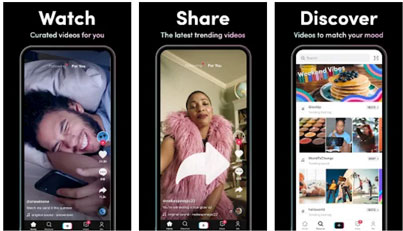

Download TikTok App in India

Download Tiktok app in India - Tiktok also know as Douyin in China is a Chinese short video social networking app owned by Bytedance. Tiktok was releases on 2016 and crossed 1 Billion users in 2019. This app is available for both Android and iOS. The founder of Tiktok is Zhang Yiming a chinese tech entrepreneur. Tiktok Apk download
TikTok is THE destination for mobile videos. On TikTok, short-form videos are exciting, spontaneous, and genuine. Whether you’re a sports fanatic, a pet enthusiast, or just looking for a laugh, there’s something for everyone on TikTok. All you have to do is watch, engage with what you like, skip what you don’t, and you’ll find an endless stream of short videos that feel personalized just for you. From your morning coffee to your afternoon errands, TikTok has the videos that are guaranteed to make your day.
We make it easy for you to discover and create your own original videos by providing easy-to-use tools to view and capture your daily moments. Take your videos to the next level with special effects, filters, music, and more.
■ Watch endless amount of videos customized specifically for you
A personalized video feed based on what you watch, like, and share. TikTok offers you real, interesting, and fun videos that will make your day.
■ Explore videos, just one scroll away
Watch all types of videos, from Comedy, Gaming, DIY, Food, Sports, Memes, and Pets, to Oddly Satisfying, ASMR, and everything in between.
■ Pause recording multiple times in one video
Pause and resume your video with just a tap. Shoot as many times as you need.
■ Be entertained and inspired by a global community of creators
Millions of creators are on TikTok showcasing their incredible skills and everyday life. Let yourself be inspired.
■ Add your favorite music or sound to your videos for free
Easily edit your videos with millions of free music clips and sounds. We curate music and sound playlists for you with the hottest tracks in every genre, including Hip Hop, Edm, Pop, Rock, Rap, and Country, and the most viral original sounds.
■ Express yourself with creative effects
Unlock tons of filters, effects, and AR objects to take your videos to the next level.
■ Edit your own videos
Our integrated editing tools allow you to easily trim, cut, merge and duplicate video clips without leaving the app.
TikTok is the official Android app for the super popular social network that lets you create and share fun videos with all your friends and followers. In order to take advantage of all that TikTok has to offer, start by setting up a user account -- it'll only take a few seconds. TikTok offers you tons of different options to create new videos. For example, choose to record your video directly on the app or use pictures and clips from your gallery. From there, add one of millions of different songs from the TikTok catalog and sync them up with your videos, otherwise choosing a song stored on your smartphone is also an option, along with recording a voiceover. The tons of features that TikTok offers make the editing process totally painless, quick and easy. Choose between all kinds of effects: filters, speed control, time-lapses, rewind, transitions and other ‘time machine’ effects. TikTok is a social network that, unlike many others, is actually still fun to be on. TikTok is here to get you in on all the latest trends, dances and viral videos. Best of all is you get.